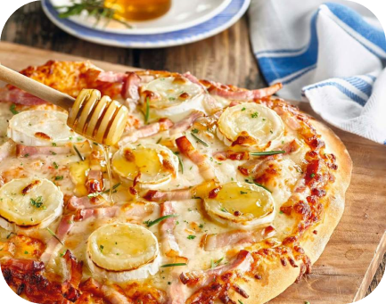

PIZZA ITALIANA CON MIEL
Italpizza
NIVEL FÁCIL / DURACIÓN 45'
Ingredientes
- 300 g de harina de fuerza + 4 cucharadas
- 250 ml de agua templada
- 30 g de levadura de panadería
- 100 g de mozzarella rallada
- 100 g de queso de cabra en rodajas
- 2 lonchas de beicon en tiras
- 3 cucharadas de salsa de tomate
- 1 cucharada de miel
- Aceite, sal
Preparación
- Diluye la levadura en el agua templada.
- Amasa, añade una pizca de sal y 50 ml de aceite. Amasa 5 minutos más.
- Dale forma de bola a la masa, colócala en un cuenco y tápalo con un paño limpio. Deja reposar 3 horas.
- Extiende la masa sobre la superficie de trabajo ligeramente enharinada y forma un disco de unos 5 mm de grosor.
- Colócalo en la bandeja del horno sobre un trozo de papel sulfurizado.
- Precalienta el horno a 250 ºC. Reparte la salsa de tomate sobre la base. Agrega la mozzarella, el queso y el beicon.
- Hornea hasta que esté dorada. Retírala, rocía con la miel y espolvorea con romero.